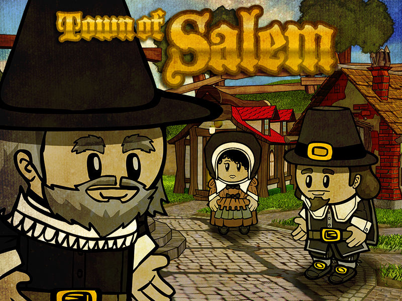

Town Of Salem

Town
Bodyguard| Town Protective| Sacrifice yourself to protect one person from death at night, killing their attacker and yourself.
Doctor| Town Protective| Heal one person each night, preventing them from dying.
Escort| Town Support| Distract someone each night. Certain roles are immune to roleblocking such as other Escorts/Consorts, Transporters, Witches, Serial killers, and Werewolves on full moon nights.
Investigator| Town Investigative Investigate someone for a clue to their role.
Jailor Town Killing| Choose someone each day to jail for the night. You may talk to them and choose to execute them.
Lookout Town Investigative| Watch someone at night to see who visits them.
Mayor| Town Support| Gain 3 votes when revealing as Mayor.
Medium| Town Support| Speak with the dead at night. Seance a live player once. You may only seance when you are dead.
Retributionist| Town Support| Resurrect a Town member from the dead.
Sheriff| Town Investigative| Check one person each night for suspicious activity.
Spy| Town Investigative| Able to read mafia chat and view who they visit. You may also listen to everyone's whispers.
Transporter| Town Support| Choose two people to switch places with each other at night.
Vampire Hunter| Town Killing| Check for Vampires each night.
Veteran| Town Killing| Decide whether or not to be alert during the night, killing all your visitors.
Vigilante| Town Killing| Choose to take justice in your own hands and shoot someone. If you shoot a town, you will commit suicide.
Mafia
Blackmailer| Mafia Support| Choose one person each night to blackmail. They will not be able to speak in the morning.
Consigliere| Mafia Support| Check one person for their exact role each night.
Consort| Mafia Support| Distract someone each night, roleblocking them.
Disguiser| Mafia Deception| Choose a target to disguise yourself as. You appear as dead and take your targets place.
Forger| Mafia Deception| Choose a person and rewrite their last will at night.
Framer| Mafia Deception| Choose one person to frame each night. They show up as a member of the mafia to investigative roles.
Godfather| Mafia Killing| Choose who to kill at night.
Janitor| Mafia Deception| Choose a person to clean each night. Their role and will shows up as blank.
Mafioso| Mafia Killing| Kill whoever the Godfather wants you to kill. If the Godfather doesn't order you or is dead, you choose.
Neutral
Amnesiac| Neutral Benign| Remember who you were by selecting a role from the graveyard.
Arsonist| Neutral Killing| Douse someone in gasoline or ignite all doused targets.
Executioner| Neutral Evil| Get your target lynched.
Jester| Neutral Evil| Trick the Town into voting against you.
Serial Killer| Neutral| Killing Kill someone each night.
Survivor| Neutral Benign| Put on a bulletproof vest at night, protecting yourself from attacks. Try to survive to the end of the game.
Vampire| Neutral Chaos| Convert others to Vampires at night.
Werewolf| Neutral Killing| Go on a rampage every Full Moon, killing your target and all of their visitors.
Witch| Neutral Evil| Control someone each night making them go to the house of whoever you choose and using their ability.